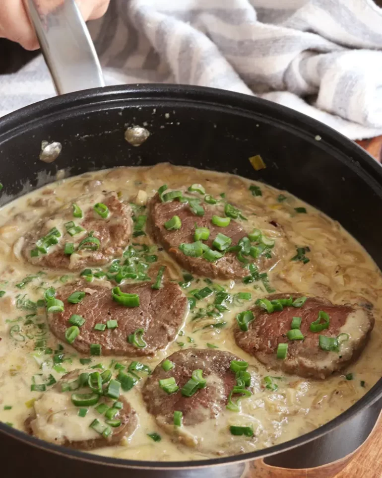

Beef Loin with mushroom

Recipe for Loin with Champignon with Cream and Green Sauce
A simple and delicious recipe to enjoy tender meat with all the
flavor that the cream sauce gives to greeno with mushrooms.
On this occasion we used Loin
(or Sirloin of Veal, as it is known in Spain)
but you can also use other cuts such as Tail of Cuadril,
steak eye (Argentine court) or even
chicken or Fish, they are also very delicious.
Ingredients:
- Beef Loin 850 Gr
- Champignon 200 Gr
- Onion 3 u. (medium)
- Green onion 3 u.
- Cream / Cream 200 Ml.
- White Wine 100 Ml.
- Butter / Butter 25 Gr.
- Olive Oil c/n
- Salt and pepper to taste
Step by step recipe
- Cut the mushrooms into quarters and reserve them in a bowl.
- Peel and cut the onions into “strips”. Reserve in another bowl.
-
Take the green onion, cut the white part and reserve along with the
onion.
- Then cut the green part and reserve in a separate bowl.
-
The next thing is to clean and cut the loin. First,
remove any excess fat that can be seen with the naked eye.
-
With a sharp knife cut flush, avoiding removing pieces
of meat or creating imperfections on the surface of the loin.
- Then cut the loin into medallions of at least 3cm thickness.
-
Once the medallions are cut, probably on a “tip” of meat.
Instead of cutting this piece in the shape of a medallion,
we are going to cut it differently. Make a cut in the center,
without cutting it completely. Then fold to form a medallion
with the two parts. Just crush it with your hand and it's ready.